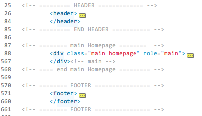
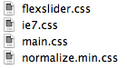

Version: 1.0
Created: 30 Jan 2013
By: mbe.ro
Email: ciprian@mbe.ro
Thank you for purchasing my theme. If you have any questions that are beyond the scope of this help file, please feel free to email via my user page contact form here. Thanks so much!
This theme is a fixed layout theme. The Main Structure is splitted into <header>, <div role="main"> and <footer>. The Javascript is always in the bottom except for the modernizr and prefixfree which should be loaded fast. The CSS does not require any prefixes thanks to prefixfree.

In this template the CSS files are 4: flexslider (the CSS for the slider), ie7 (some special CSS for IE7), main css and normalize min css (the normalizing of the HTML code). All need to be included all the time (they are mandatory - except for IE7 which needs to be included for IE7 only).

The Javascript files can be split into 3 types: jquery, plugins and main js. We recommend you incude all of them, but if you feel that you want to use a different plugin or something you can replace at your will.
The Javascript libraries & plugins used:
The main.js contains all the functions that are run during runtime. It's commented and very easy to customize according to your future needs.
I've included all the PSD.
You will notice that all PSD's are very well structured and easy to use. If you wish to modify something from the design you could even search between the layers (almost all the layers should be named or grouped into something named).
We've used the following scripts and icon libraries:
We tried to do most of the Theme with CSS effects (not JS) - this way they are smoother and feel more natural. The HTML is prepared especially for a Wordpress theme so if you want to make a wordpress theme out of it then feel free. We have optimized them for Browsers downto IE7 so most of your users should get the best experience possible.
Once again, thank you so much for purchasing this theme. As I said at the beginning, I'd be glad to help you if you have any questions relating to this theme. No guarantees, but I'll do my best to assist. If you have a more general question relating to the themes on ThemeForest, you might consider visiting the forums and asking your question in the "Item Discussion" section.
mbe - web agency